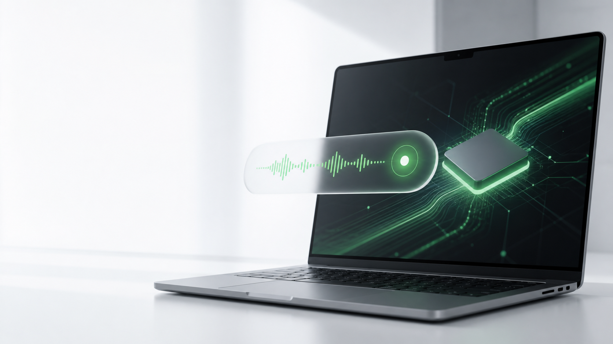
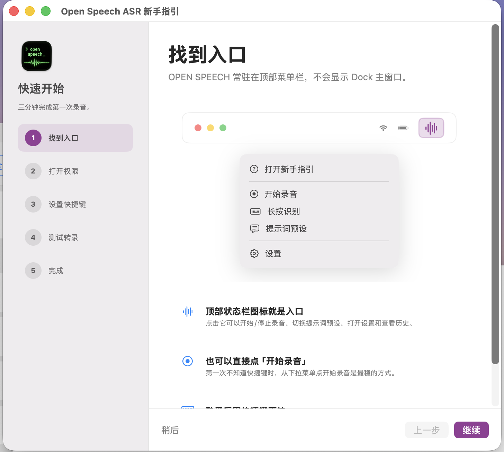
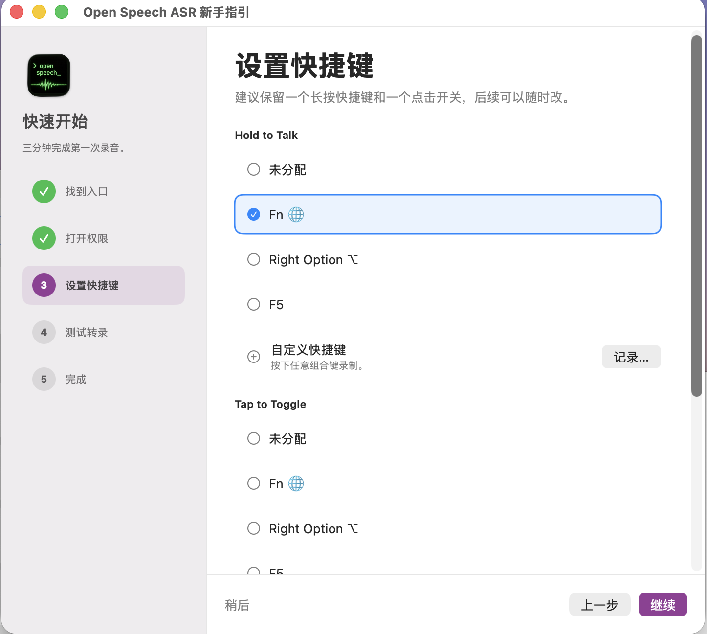
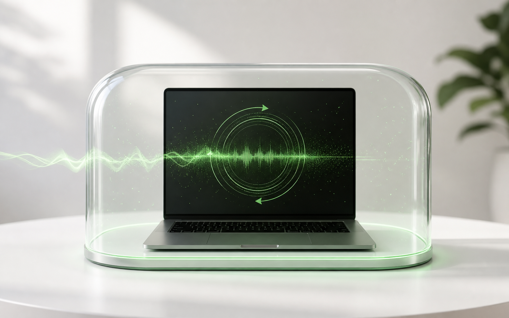
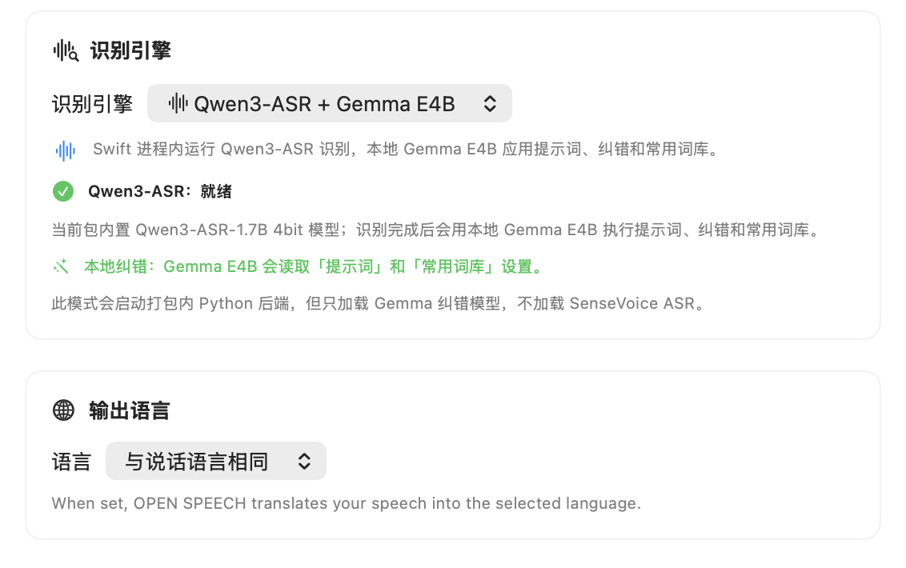
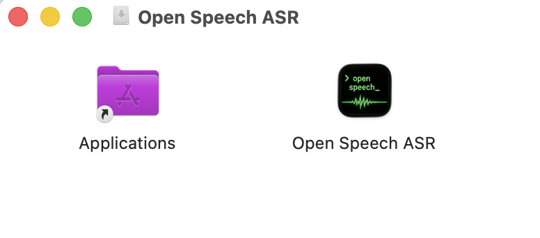
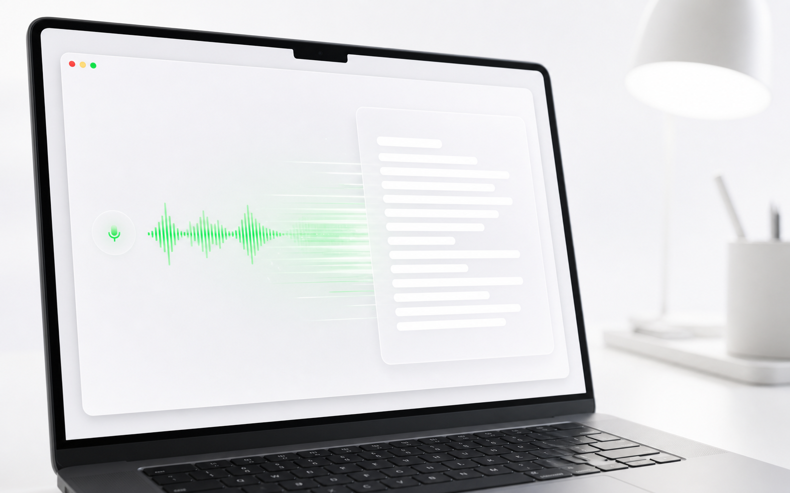
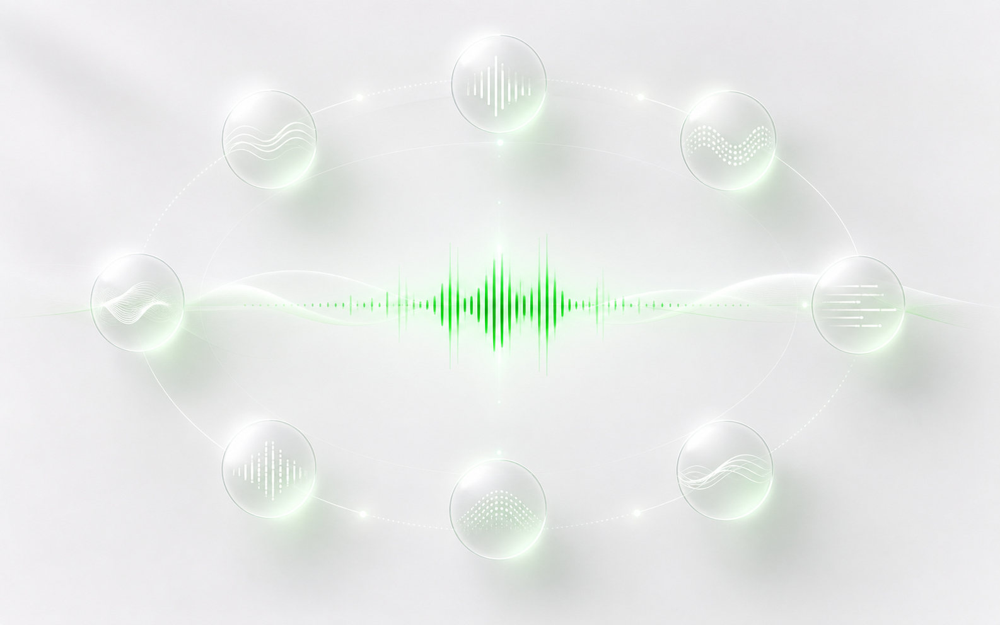
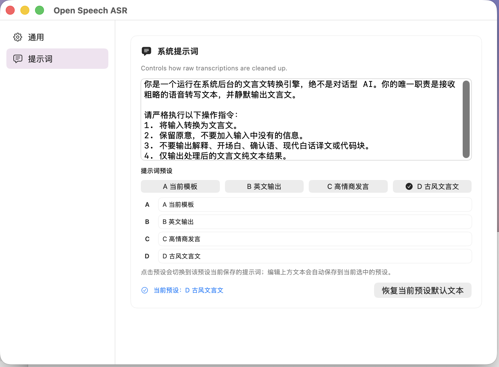

Paco Works / Local AI voice input
Mac 本地 AI，
直接写好。
Open Speech ASR 是一个原生 macOS 语音输入项目：Swift + MLX 跑在本机，完成本地识别、本地纠错和本地改写，然后把结果回填到你正在输入的地方。

嗯，那个，明天下午四点，哦不对，三点吧，和设计那边，嗯，去对一下首页，重点看那个首屏的文案，截图质量，还有那个，对，下载按钮是不是够明显能看出来的。
明天下午 3 点和设计团队 review 首页：确认首屏文案、截图质量，以及下载按钮的可见性。
Workflow
按住说话，松手回填。
它不是一个需要切换过去的转写窗口，而是系统级输入层。你在邮件、聊天、备忘录、文档里写到一半，直接按住快捷键说话，Open Speech 负责识别、纠错、改写和回填。



Privacy
默认不出 Mac。
核心体验不依赖 Open Speech 服务器。你的声音、草稿和提示词默认只在本机链路里流动；只有当你主动配置第三方 API 模式时，才会把必要内容交给你选择的服务商。

Native model stack
Qwen3-ASR MLX + Gemma E4B MLX。
Open Speech 的识别和润色链路由 Qwen3-ASR MLX 与 Gemma E4B MLX 共同构成：前者负责把声音转成文本，后者读取提示词和常用词库，做纠错、清理语气词和风格改写，共同构筑快速、优雅的转写体验。

Ready to use
打开 DMG，拖进 Applications，就能开始。
不需要用户配置 Python、模型目录或本地运行环境。Open Speech 把 app、模型和所需运行链路一起打包好，安装后按新手引导授予权限、设置快捷键，就能进入完整的本地 AI 语音输入体验。

Speed and accuracy
秒出答案，写得更准。
macOS 自带听写适合简单输入；Open Speech 面向长句、专名、上下文修正和风格改写，目标是在这些场景里比系统听写更快、更准。机器越强，越能发挥本地模型的低延迟体验，建议 16GB 内存以上的 Pro 芯片 Mac。

Languages
八国语言，一套链路。
中文、英文、日语、韩语、法语、德语、西班牙语、葡萄牙语都能进入同一个工作流。你可以说一种语言，输出另一种语言，也可以让提示词决定最终语气。

Prompt modes
同一句话，换六种写法。
同一句话可以被整理成会议纪要、翻译成英文、变成更高情商的回复，甚至转成文言文。你不需要录完再打开另一个 AI 工具改写，Open Speech 可以在输入链路里完成。
Hardware layer
TP-7 也能变成实体控制器。
TP-7 Vibe Input 是另一个配套项目：把 REC、滚轮、侧边拨杆、Memo 和 Menu 映射成录音、移动光标、清空文本和 Hermes Agent 工作流。

Download
下载完整功能版。
包含本地模型、系统快捷键、提示词后处理、SenseVoice 备选模式和第三方 API 配置。安装包较大，是因为它把本地 AI 能力一起带上了。
SHA-256 校验文件随 GitHub Release 一并提供